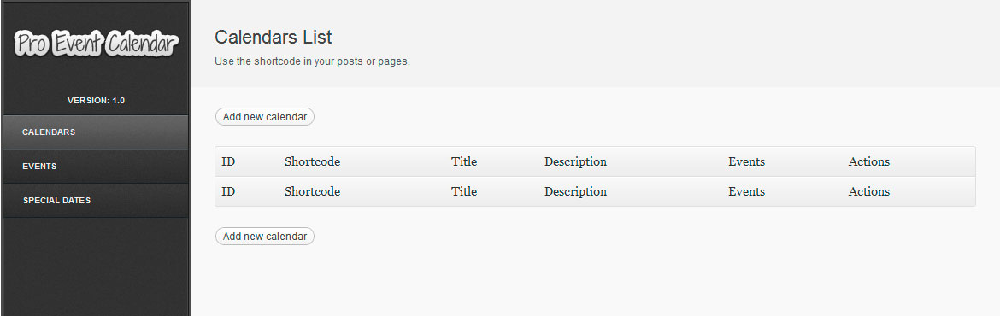
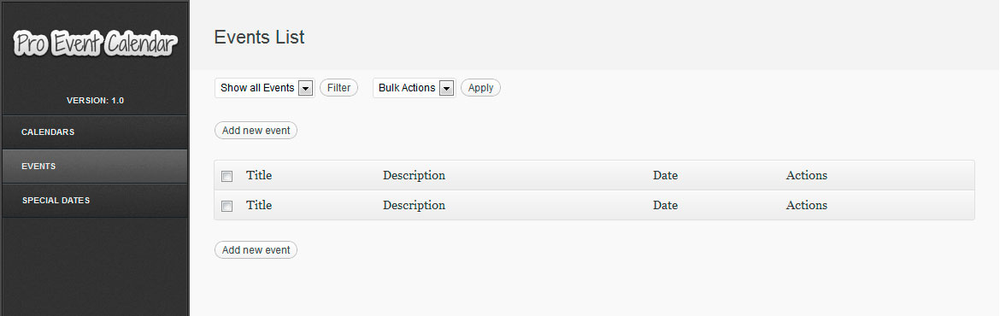
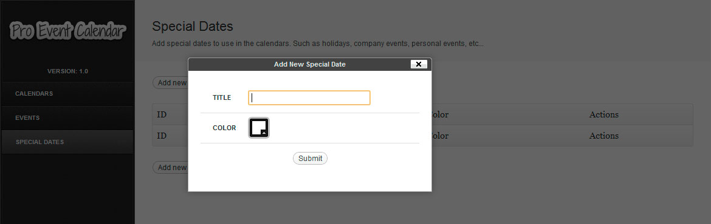
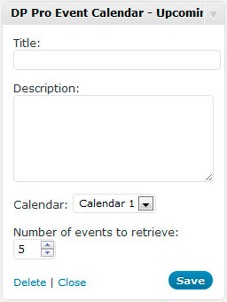

Wordpress Pro Event Calendar
Premium Plugin
- Created: 08/06/2012
- latest Update: 08/06/2012
- By: Diego Pereyra
- Email: info@dpereyra.com
The Pro Event Calendar plugin adds a professional and sleek calendar to your posts or pages. 100% Responsive, also you can use it inside a widget.
Introduction
Thank you for purchasing my item. If you have any questions that are beyond the scope of this help file, please feel free to email via my user page contact form here. Thanks so much!
Features
- Elegant & Sleek Design
- Responsive Layout
- Easy to manage Events
- Special Dates
- Draggable / Touchable
- Date range support
- Translate it easily.
- Cross Browser Support
- Simple to Customize
- Well Documented
Included Folders
The following files and folders are included in the package:
- Documentation Folder contains this help file.
- dpProEventCalendar Folder contains the Wordpress plugin.
Usage
- 1 - Copy the "dpProEventCalendar" folder into your wordpress "wp-content/plugins/" folder using your favorite FTP program.
- 2 - Go to your WordPress "Manage Plugins" page, find the "DP Pro Event Calendar" in your plugins list and click on activate.
That's it for the installation!
Once the plugin has been activated you will notice a new menu on the side called "Event Calendar" enabling you to customize it.
When you have finished creating and customizing your events, use this shortcode [dpProEventCalendar id=x]
into any post or page and the calendar will be integrated. Note that the x is the ID number of the
calendar.
Calendars
Create the calendars and manage the special dates associated.
Events
Manage all the events of the calendar, also you can filter and make bulk actions.
Special Dates
Add special dates to use in the calendars. Such as holidays, company events, personal events, etc...
Upcoming Events Shortcode
To add the upcoming list in any page/posts use the shortcode [dpProEventCalendar id=xx type="upcoming" limit=xx category=CAT_ID]
Where id=xx is the calendar ID. And limit=xx is the number of upcoming events that you want to retrieve.
The category parameter filters the events by the category ID, this field is optional.
Calendar as a Widget
Drag & Drop the Widget to the area of your theme where you want this should be placed.

Upcoming Events Widget
Drag & Drop the Widget to the area of your theme where you want this should be placed.

Credits
- jQuery - http://www.jquery.com/
- Isotope - http://isotope.metafizzy.co/
Changelog
Version 2.2.5
- Added Event data in pages automatically
- Added Booking button in Event pages
- Added iCal button in accordion layout.
Version 2.2.4
- Added option to select a category when importing a iCal (ics) file
- Added option to enable booking for events (beta)
Version 2.2.3
- Added option to import iCal files (ics)
- Fixed issue with monthly recurring events
Version 2.2.2
- Added more options for monthly events
Version 2.2.1
- Added Cache option
- Added option to assign an event to multiple calendars
- Improved CSS in Add Event form inside the monthly layout
Version 2.2
- Added RTL Support
- Added Full Images in events instead of thumbnails
- Added button for logged in users to remove their events in the frontend
Version 2.1.9
- Added option to display the event author
- Added more options for weekly events
Version 2.1.8
- Added option to customize the frontend form fields
- Added option to allow logged in users to edit their own events
Version 2.1.7
- Added option to hide old dates
- Added option to limit hours in daily view
- Added Phone field for events
- Fixed issue with AM/PM in the "Add event" frontend form
Version 2.1.6
- Improved support for latest version of Article Social Share
- Added possibility to display events from a specific category in the calendar view
Version 2.1.4
- Added more options for daily events
- Fixed issue adding new calendars
Version 2.1.3
- Added category list to filter events
- Added possibility to add events for non-logged in users
- Fixed issue with Social Share
Version 2.1.1
- Added option to allow logged-in users rate events.
- Added Google Map upcoming events shortcode and widget.
- Added support for Wp Article Social Share plugin
Version 2.1
- Added category dropdown in "add event" frontend form.
- Added button to subscribe via Mailchimp to a calendar.
Version 2.0.9
- Added option to add an image in new event form on the frontend
- Added search field in accordion layout
- Added option to auto-publish all events sent by users on the frontend.
Version 2.0.8
- Fixed issue in upcoming events widget using "Accordion" layout
Version 2.0.7
- Added Accordion layout to upcoming events list
- Added option to receive an email when a user submits a new event
Version 2.0.6
- Fixed minor layout issues
- Added category dropdown in calendar view
Version 2.0.5
- Added shortcodes for event page
- Improved events search
- Improved list events by author shortcode
Version 2.0.4
- Added Today's events shortcode and widget
- Added option to include rating in events
- Fixed some conflicts with datepicker CSS
Version 2.0.3
- Improved some CSS styles
- Added option to link events with post type page
- Added featured images in events lists and preview
Version 2.0.2
- Added standalone form to add new events in the frontend
Version 2.0.1
- Added new layout and widget "Accordion List"
- Fixed issues displaying some events in the upcoming events widget
- Added Custom Shortcodes generator section
Version 2.0
- Improved responsiveness with preview tooltips
Version 1.9.9
- Fixed issue with "view all events" button in IE 8.
- Updated placeholder.js plugin
Version 1.9.8
- Fixed issue including the JS/CSS files when the shortcode is not used.
Version 1.9.7
- Fixed issues with yearly events in upcoming events widget
Version 1.9.6
- Fixed issues creating calendars in some servers
Version 1.9.5
- Added "Monthly Events List" default view option
Version 1.9.4
- Fixed issue with jQuery 1.10.2.
- Fixed issue with other custom post types
Version 1.9.3
- Fixed issue with sorting in upcoming events widget.
Version 1.9.2
- Fixed issue with events preview when the position of the body is relative
- Added End Date in "View all events" mode.
- Added Date sortable column in events list.
Version 1.9.1
- Fixed issue with yearly/monthly events in upcoming events widget.
Version 1.9
- Fixed issue with displaying daily events in upcoming events widget
Version 1.8.9
- Fixed issue with colorpicker in WP 3.6
Version 1.8.8
- Fixed issue with speed load in some servers
- Fixed issue with tooltip in WP 3.6
Version 1.8.7
- Fixed issue with upcoming events widget in WP multisite.
Version 1.8.6
- Fixed minor issues in wp-admin and upcoming events widget.
Version 1.8.4
- Added option to select specific event category in upcoming widget
- Fixed issue with frontend event form
Version 1.8.3
- Fixed minor issues in upcoming events widget
- Fixed issue with datepicker in events
Version 1.8.2
- Fixed minor issues in last update
Version 1.8.1
- Added option to let users submit an event in the frontend.
- Fixed issue in "View all events" button
Version 1.8
- Added Custom CSS option
- Added Categories for events
- Added Duplicate/clone events option
- Added columns in events list (wp-admin)
- Fixed issue in "View all events" button
Version 1.7.9
- Added translation fields for "Monthly" and "Daily" Buttons
- Added Show/Hide Monthly and Daily buttons option
Version 1.7.8
- Fixed issue displaying notes in iCal feed
- Fixed issue in "All events in the month" list
Version 1.7.7
- Fixed issue in wp-admin with last update
Version 1.7.6
- Fixed Timezone issues with iCal feed
- Added "Daily" view
- Added feature to see all events in a month
- Improved UI
Version 1.7.5
- Fixed issue in WP multisite installations
Version 1.7.4
- Fixed issue with event counter in calendar page
Version 1.7.3
- Fixed issue displaying events in trash
- Fixed issue filtering events by calendar
- Fixed warning errors in events list page
Version 1.7.2
- Added post type for events, so the events now can be displayed also as posts
Version 1.7.1
- Fixed issue removing "preselected date" in calendars
Version 1.7
- Added iCal feed button in calendar
- Added Description, location and URL to iCal
- Fixed issues with iCal feed
Version 1.6.9
- Added option to allow plugin access to different user roles
Version 1.6.8
- Fixed an issue in the update notifier
Version 1.6.7
- Fixed an issue in search results
Version 1.6.6
- Fixed an issue in upcoming events widget
Version 1.6.5
- Fixed an issue with daily frecuency in events
Version 1.6.4
- Added Hide Time option in events
- Added Location option in events
Version 1.6.3
- Added RSS feed export option
Version 1.6.2
- Added shortcode support in events description
Version 1.6.1
- Added iCal feed export option.
Version 1.6
- Added plugin update notification.
Version 1.5.3
- Fixed an issue with timezones.
Version 1.5.2
- Fixed an issue with compatibility issues in jquery.
Version 1.5.1
- Fixed an issue with jQuery 1.9.
Version 1.5
- Fixed an issue with the upcoming events widget and recurring events.
Version 1.4.9
- Fixed an issue with paragraphs in events descriptions.
Version 1.4.8
- Fixed an issue in preview of events.
Version 1.4.7
- Fixed an issue scrolling in mobile devices
Version 1.4.6
- Fixed a minor issue in widgets titles.
Version 1.4.5
- Fixed an issue with last update
Version 1.4.4
- Added End Time feature
Version 1.4.3
- Improved Date numbers style
- Added Option to display a list of events in a day on mouse over
- Improved Admin UI
Version 1.4.2
- Fixed an issue with MySQL timezone.
Version 1.4.1
- Fixed an issue editing events.
Version 1.4
- Fixed compatibility issues.
Version 1.3.9
- Added TinyMCE editor for events description.
Version 1.3.8
- Fixed responsiveness issues.
- Fixed dates width issue.
Version 1.3.7
- Added upcoming events from shortcode.
- Added option to use a "X" instead of a count of events on dates.
Version 1.3.5
- Fixed a width issue with widgets.
Version 1.3.4
- Fixed an issue with the Google maps.
- Fixed an issue with the Upcoming events widget.
- Fixed an issue adding special dates.
Version 1.3.3
- Added Google Maps support.
Version 1.3.2
- Fixed events order.
Version 1.3.1
- Added dark skin theme.
Version 1.3
- Fixed issues with Hebrew characters.
Version 1.2.9
- Fixed a minor issue with Firefox.
Version 1.2.8
- Added multi-site support.
Version 1.2.7
- Fixed minor display issues.
Version 1.2.6
- Fixed an issue with search.
Version 1.2.5
- Added Upcoming Events Widget.
- Fixed minor issues.
Version 1.2.3
- Added Current Date Color.
Version 1.2.2
- Fixed a weekly frecuency issue.
Version 1.2.1
- Fixed minor issues with mobile devices
Version 1.2
- Fixed an issue with UTC
- Fixed minor browser compatibility issues.
Version 1.1
- Fixed issues with month translation
- Added the possibility to select Monday/Sunday as the first day to display in the calendar